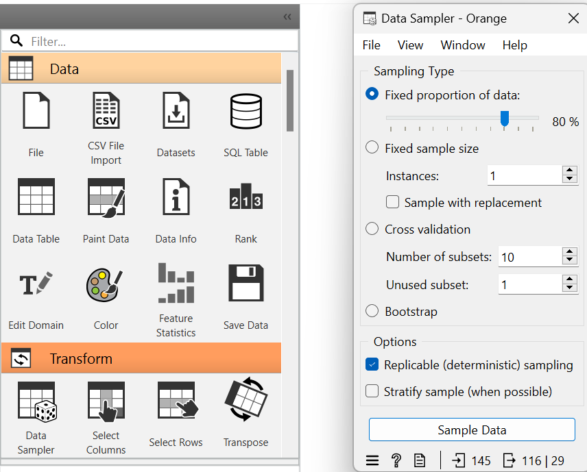
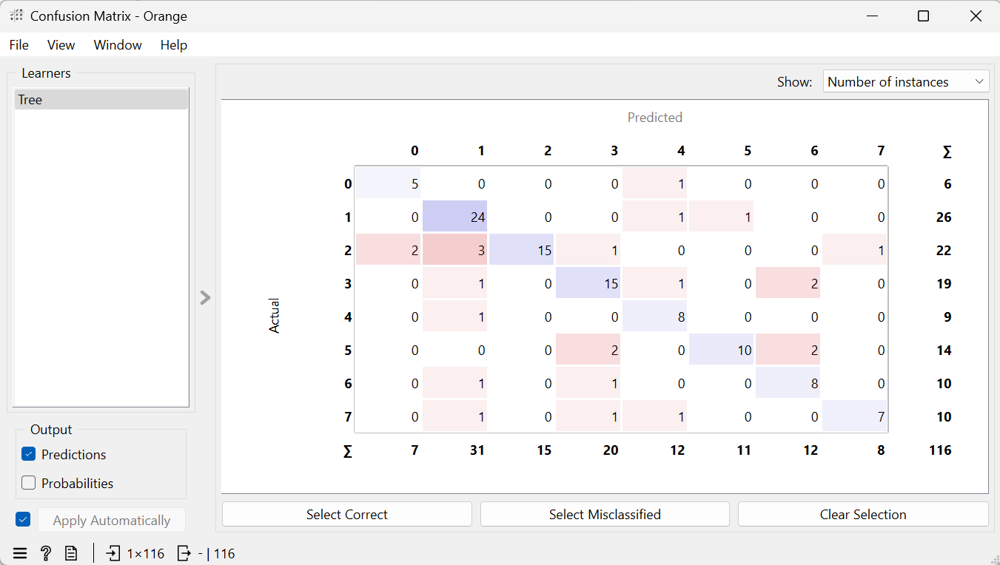
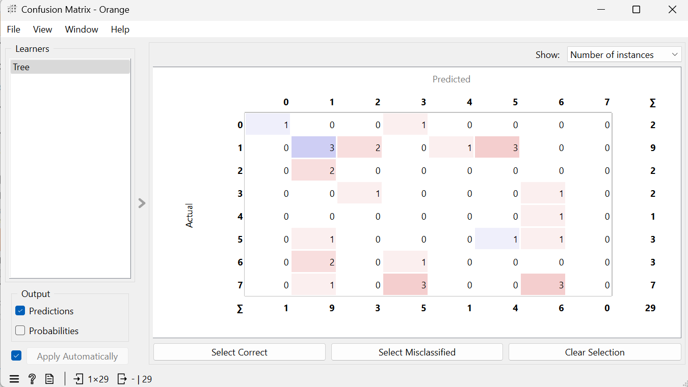
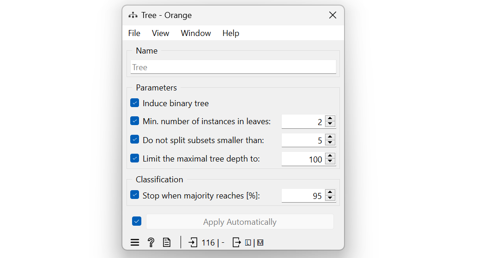
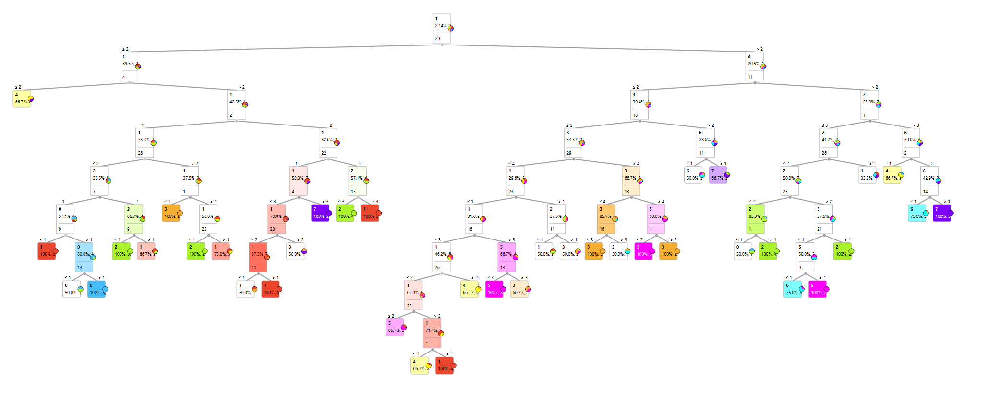
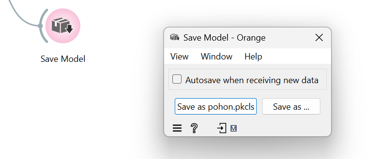
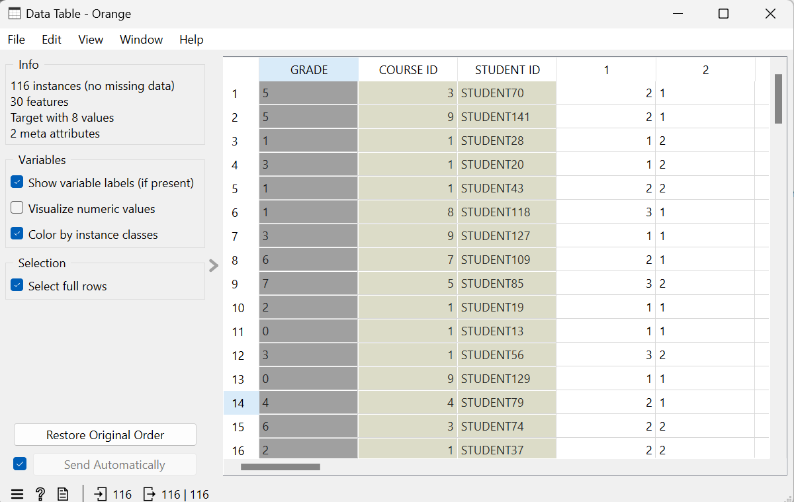

UAS Analisis#
Analisis Komparatif Performa Mahasiswa Berdasarkan Pola Perilaku dan Sosio-Ekonomi Menggunakan Orange Data Mining
Dataset yang digunakan pada eksperimen ini bersumber dari UCI Machine Learning Repository, dengan judul “Higher Education Students Performance Evaluation” : https://archive.ics.uci.edu/dataset/856/higher+education+students+performance+evaluation
Ringkasan dataset :
Keterangan |
Detail |
|---|---|
Nama Dataset |
Higher Education Students Performance Evaluation |
Jumlah Fitur (Features) |
31 |
Jumlah Performa |
8 class ( 0 - 7 ) |
Jumlah Data Keseluruhan |
145 Data |
Data Training 80 % |
116 Data |
Data Testing 20 % |
29 Data |
Nilai Kosong (Missing Values) |
Tidak ada |
Distribusi Kelas Variabel Target (GRADE)
Berdasarkan visualisasi grafik batang pada widget Distributions, sebaran data asli adalah sebagai berikut:
GRADE |
Jumlah Mahasiswa |
|---|---|
1 |
35 |
2 |
24 |
3 |
21 |
5 |
17 |
7 |
17 |
6 |
13 |
4 |
10 |
0 |
8 |
1. Alur Metode#
Dalam lembar kerja Orange, dibangun sebuah arsitektur alur kerja (workflow) data mining yang terdiri dari beberapa komponen sebagai berikut :

Gambar di atas menunjukkan alur kerja klasifikasi menggunakan algoritma Decision Tree pada Orange. Proses dimulai dari File untuk memuat dataset, kemudian Data Sampler membagi data menjadi 80% data training dan 20% data training. Data training digunakan untuk membangun model pada widget Tree, sedangkan proses evaluasi dilakukan melalui Test and Score menggunakan data training dan data testing. Hasil evaluasi ditampilkan pada Confusion Matrix, struktur pohon keputusan divisualisasikan melalui Tree Viewer, model disimpan menggunakan Save Model, sedangkan Data Table dan Distributions digunakan untuk melihat isi serta distribusi data.
a. File#
Proses utama untuk memuat dataset mentah data.csv.
berfungsi untuk mengimpor atau memuat dataset ke dalam Orange sebagai sumber data utama. Dataset yang dipilih dapat berasal dari berbagai format file, seperti CSV, Excel. Setelah data berhasil dimuat, widget ini akan meneruskan dataset ke widget berikutnya untuk dilakukan proses analisis, pelatihan model, maupun evaluasi.

b. Data Sampler#
berfungsi untuk membagi dataset menjadi (training data) dan (testing data). Pada penelitian ini digunakan metode Fixed Proportion of Data dengan proporsi 80% data training dan 20% data testing. Pembagian dilakukan secara deterministik (Replicable) sehingga hasil pembagian data akan tetap sama setiap kali proses dijalankan.

Dataset yang berjumlah 145 data dibagi menjadi 116 data training (80%) dan 29 data testing (20%) menggunakan widget Data Sampler. Data traiming digunakan untuk proses pelatihan model, sedangkan data testing digunakan untuk pengujian dan evaluasi model.
c. Distributions#
digunakan untuk menampilkan distribusi atau frekuensi data pada setiap atribut dalam dataset. Visualisasi ini membantu mengetahui jumlah data pada masing-masing kategori sehingga karakteristik data dapat dipahami sebelum dilakukan proses klasifikasi.

Berdasarkan hasil distribusi atribut GRADE, terlihat bahwa jumlah data pada setiap kategori tidak sama. Kategori GRADE 1 memiliki jumlah data terbanyak, sedangkan GRADE 0 memiliki jumlah data paling sedikit. Informasi ini memberikan gambaran mengenai sebaran data yang akan digunakan dalam proses pelatihan dan pengujian model Decision Tree.
d. Confusion Matrix#
Digunakan untuk menampilkan hasil evaluasi model klasifikasi dalam bentuk matriks perbandingan antara kelas aktual dan kelas hasil prediksi. Matriks ini memudahkan analisis terhadap jumlah prediksi yang benar maupun salah pada setiap kelas sehingga performa model Decision Tree dapat diketahui.
Data training 80% :

Confusion Matrix pada 116 data training menunjukkan hasil prediksi model terhadap data yang digunakan selama proses pelatihan. Sebagian besar data berhasil diklasifikasikan dengan benar yang ditunjukkan oleh nilai pada diagonal utama, sedangkan nilai di luar diagonal menunjukkan kesalahan klasifikasi.
Data testing 20% :

Confusion Matrix pada 29 data testing menunjukkan hasil evaluasi model terhadap data yang belum pernah digunakan dalam proses pelatihan. Nilai pada diagonal utama menunjukkan prediksi yang benar, sedangkan nilai di luar diagonal menunjukkan kesalahan klasifikasi. Hasil ini digunakan sebagai acuan utama dalam menilai performa model Decision Tree.
e. Test and Score#
Digunakan untuk mengevaluasi performa model Decision Tree berdasarkan beberapa metrik, yaitu AUC (Area Under Curve), CA (Classification Accuracy), F1-Score, Precision, Recall, dan MCC (Matthews Correlation Coefficient). Pada penelitian ini, evaluasi dilakukan pada data training dan data testing untuk membandingkan kemampuan model dalam melakukan klasifikasi.
Data Training 116 Data :

Hasil evaluasi pada 116 data training menunjukkan bahwa model Decision Tree memperoleh nilai AUC sebesar 0,982, Accuracy (CA) sebesar 0,793, F1-Score sebesar 0,794, Precision sebesar 0,817, Recall sebesar 0,793, dan MCC sebesar 0,760. Nilai tersebut menunjukkan bahwa model memiliki performa yang baik pada data latih.
Data Testing 29 Data :

Hasil evaluasi pada 29 testing menunjukkan bahwa model Decision Tree memperoleh nilai AUC sebesar 0,521, Accuracy (CA) sebesar 0,172, F1-Score sebesar 0,179, Precision sebesar 0,198, Recall sebesar 0,172, dan MCC sebesar 0,022. Nilai tersebut menunjukkan bahwa performa model pada data uji masih rendah sehingga kemampuan model dalam menggeneralisasi data baru belum optimal.
Berikut merupakan hasil evaluasi akurasi (Classification Accuracy/CA) model Decision Tree pada data training dan data testing :
Data |
Akurasi (CA) |
|---|---|
Training (116) |
0.793 (79,3%) |
Testing (29) |
0.172 (17,2%) |
f. Tree#
Berfungsi untuk membangun model klasifikasi menggunakan algoritma Decision Tree berdasarkan data latih (training data). Pada penelitian ini, model dibangun dengan parameter binary tree, minimum 2 data pada setiap leaf, minimum 5 data untuk dilakukan pemisahan, kedalaman maksimum pohon 100, serta berhenti ketika mayoritas kelas mencapai 95%.

Pengaturan parameter pada widget Tree yang digunakan untuk membangun model Decision Tree. Parameter tersebut mengatur proses pembentukan pohon keputusan agar menghasilkan model klasifikasi yang sesuai dengan data training.
g. Tree Viewer#
Digunakan untuk menampilkan struktur pohon keputusan (Decision Tree) yang dihasilkan dari proses pelatihan model. Visualisasi ini memperlihatkan aturan-aturan klasifikasi berdasarkan atribut yang digunakan hingga menghasilkan keputusan pada setiap kelas.

Gambar struktur pohon keputusan (Decision Tree) yang terbentuk dari 116 data training. Setiap simpul node merepresentasikan atribut yang digunakan sebagai dasar pemisahan data, sedangkan setiap cabang menunjukkan aturan keputusan hingga menghasilkan kelas prediksi pada simpul akhir leaf node.
h. Save Model#
Berfungsi untuk menyimpan model Decision Tree yang telah selesai dilatih. Model yang disimpan dapat digunakan kembali untuk proses prediksi atau pengujian tanpa perlu melakukan pelatihan ulang.

Proses penyimpanan model Decision Tree menggunakan widget Save Model. Model yang telah dilatih disimpan sehingga dapat digunakan kembali pada analisis atau pengujian selanjutnya.
i. Data Table#
Berfungsi untuk menampilkan data dalam bentuk tabel sehingga pengguna dapat melihat isi dataset secara langsung. Pada penelitian ini, Data Table menampilkan 116 data training hasil pembagian menggunakan Data Sampler yang akan digunakan dalam proses pelatihan model Decision Tree.

tampilan Data Table yang berisi 116 data training. Data ditampilkan dalam bentuk tabel beserta atribut-atributnya sehingga memudahkan proses pemeriksaan dan verifikasi data sebelum dilakukan pelatihan model.